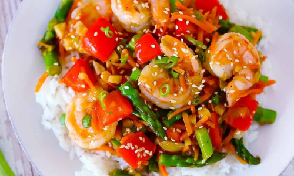

Shrimp and Vegetable Stir-Fry
Ingredients
- 1 lb shrimp, peeled and deviened
- 4 Tbsp soy sauce
- 1 Tbsp peanut butter
- 1 Tbsp sesame oil
- 2 cloves garlic, minced
- 1 bell pepper, sliced
- 1 cup broccoli florets
- 1 carrot, sliced
- 1 cup snap peas
- 2 cups cooked jasmine rice
Directions
- In a bowl, mix soy sauce, peanut butter, and sesame oil. Set aside.
- Heat a large skillet or wok over medium-high heat. Add garlic and cook until fragrant.
- Add shrimp and cook until pink, about 2-3 minutes. Remove shrimp from skillet and set
aside.
- Add bell pepper, broccoli, carrot, and snap peas to the skillet. Stir-fry for 5-7 minutes
until vegetables are tender-crisp.
- Return shrimp to the skillet and pour in the sauce mixture. Stir to coat everything
evenly.
- Serve stir-fry over cooked jasmine rice.